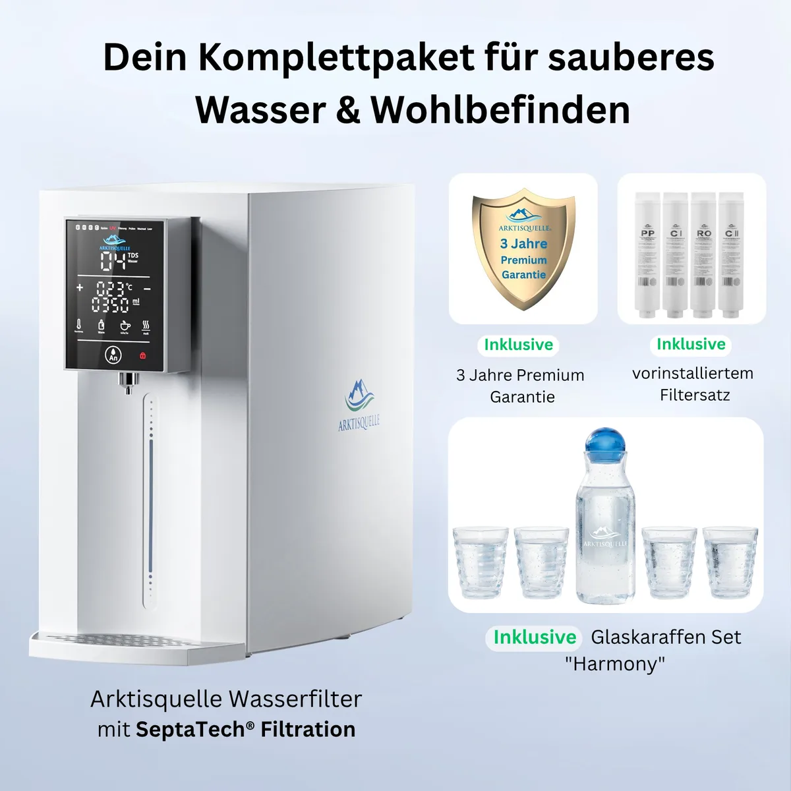

Wasserfiltration
Arktisquelle
Deutscher Anbieter von Auftisch-Umkehrosmoseanlagen mit SeptaTech®-Filtration, UV-Hygieneschutz, Heißwasserfunktion und eigenem Servicekonzept.
Produkte in der Datenbank

Arktisquelle
Wasserfilter
1.199,00 €
Bauart: Auftischsystem ohne FestwasseranschlussFiltration: 7-Stufen SeptaTech®Membran: Molekularmembran / Umkehrosmose, 0,0001 µm